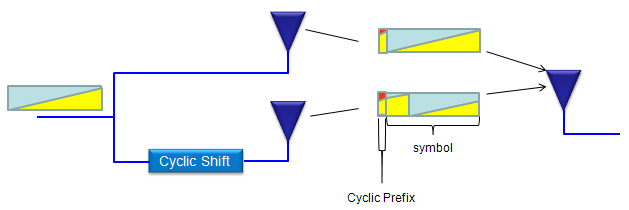
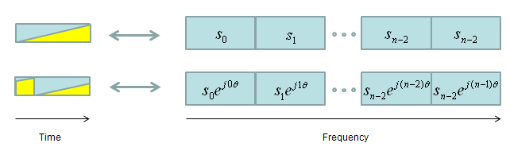

|
LTE Quick Reference Go Back To Index Home : www.sharetechnote.com |
|||||||||||||||||||||||||
|
CDD is a kind of transmit diversity mechanism implemented by applying a different phase delay (cyclic phase delay) for each OFDM subcarrier. It is used in spatial multiplexing to increase diversity between the 2 spatial paths.
Very simply put, in CDD... one antenna is transmitting the original copy of data and the other antenna is transmitting the cyclic shifted version of the original data as illustrated below (see how the yellow part to represent the cyclic shift)

If you represent the transmitted data in frequecy domain, the original data and the cyclic shifted version can be represented as follows. As you see, the cyclic shif in time domain produce the phase shift for each symbols in frequency domain and it generate the same effect as frequency diversity.

CDD is applied differently for each transmission mode as shown in the following table.
What is the difference between NO CDD (without CDD) and LARGE CDD ? To be honest, I don't think I can explain it in easy way implying that even I don't have fully-detailed understanding on this. If I don't explain anything in plain term. You can refer to 36.211 section 6.3.4.2 Precoding for spatial multiplexing or you can refer to the precoding section of LTE Basic Procedure page. (Sometimes there is some concept that you cannot understand without going through the mathmatical description and pulling your hair for long time).
|